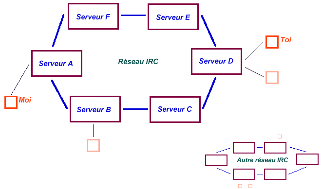

IRC
IRC kécédo ?
IRC c'est l'Internet Relay Chat, c'est-à-dire un réseau de serveurs destinés à la discussion.
Autrement dit, un moyen de faire des rencontre et échanger des idées avec des gens du monde entier !

Comment ça marche ?
Voilà, en gros comment ça marche...

Bon c'est cool, comment je me connecte maintenant ?
Pour se connecter sur IRC il faut un client IRC. Pour Windows, le plus utilisé est Mirc
mais le meilleur est ViRC. Sur mac, il y a IRCle et sous unix, IRCii.
Il existe plusieurs réseaux de serveurs où l'on peut se connecter. Biensûr je vais vous recommander le réseau
Undernet car c'est celui sur lequel je vais régulièrement, de plus ce réseau
offre des paricularités intéressantes comme les bots W et X.
Voilà donc une fois le client installé et la connexion établie sur le serveur, il faut rejoindre un "channel",
c'est à dire un lieu de discussion. Par exemple, si vous aimez les girafes, je vous recommande le channel #girafe...
Il vous faudra donc taper la commande "/join #girafe". Si en fait, vous n'aimez pas les girafes, vous pouvez toujours taper la commande
"/list" qui vous affichera la liste des channels qui existent sur le réseau, ainsi que le sujet associé.
Heu comprend rien...
Maisss si c'est facile. Bon faut savoir quelques trucs, comme les smileys. Ce sont des petits dessins représentant des bonhommes
qui sourient ou qui pleurent ou autres... Par exemple :), en tournant ta tête, eh bah tu vois bien que c'est un
gars qui se marre tain tu vois pas??? c trop clair pourtant on le voit vachement bien.. Bon arrête de pencher ta tête
comme ça on dirait un débile.
Bon y'a aussi des termes comme "GT", ça veux dire "get together" c'est à dire une réunion de gens qui se sont
connus sur IRC. Ou encore "ASV" ça veux dire "peut tu me donner ton Age ton Sexe et ta Ville ?"... Mais donne pas ton sexe, tu
pourra en avoir besoin un jour. Sinon "brb" veux dire "be right back" autrement dit "je reviendrai" comme dirait Schwarzy. "Away" veux
dire que la personne n'est pas là. LOL veux dire "laughing out loud" (je crois) ce qui se traduit par MDR (mort de rire).
Et les termes techniques : le "nick" c'est le pseudonyme choisi (nickname). Le "topic" c'est le sujet de discussion du channel,
ou un commentaire quelconque, que les utilisateurs peuvent voir en joignant le channel ou en regardant la liste des channels.
Le "ping" est une technique permettant de connaître le temps de latence, c'est à dire la différence de temps entre
le moment où un message est envoyé et le moment où il est reçu (généralement quelques secondes).
Le "lag" signifie un temps de latence élevé. On dit que quelqu'un "lag" (du verbe "lagger") si son "ping" est trop long.
Me suis fé kické ! ! ! !
Sur un channel certaines personnes on le droit de "kicker" quelqu'un c'est à dire
l'obliger à quitter le channel. Ces personnes sont des "op" (opérateur) et on peut les reconnaître au signe
"@" se trouvant devant leur nick. Ces individus peuvent aussi "ban" (ou "bannir" ou "banner") quelqu'un du channel : l'empêcher
de revenir. Mais bon c'est ta faute aussi t'a qu'a pas dire de conneries.
Heu je passe mes nuits sur IRC
Oui il existe un certain danger de passer trop de temps sur IRC, ou d'y faire des mauvaises rencontres. Certains prennent IRC
comme un jeu et d'autres le prennent au sérieux (quand à moi je le prend sérieusement comme un jeu). Mais sachez
qu'il est fréquent de voir des couples se former grâce aux cyber rencontres.
Et pour finir, une image qui résume tout ça:
Le channel #nous
C'est le channel où vous pourrez me rencontrer, j'y vais presque tous les soirs. Sans faire de pub, il est super ce channel !
Vous y rencontrerez des français et des québecois : que des gens coooool.
D'ailleur, allez voir la page en cliquant ->ici<-.